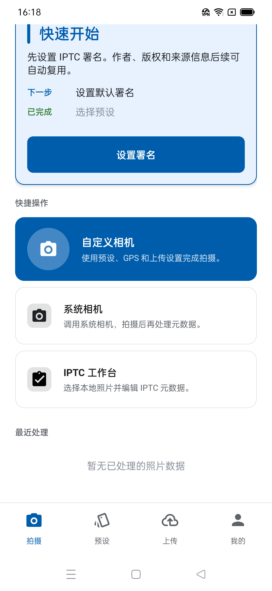

Edição IPTC, EXIF e XMP
Reveja e edite legendas, títulos, palavras-chave, autores, direitos de autor, direitos e localização.
Explore this featureFerramenta de fotografia para Android
Metadados fotográficos prontos para o terreno.
CaptionMeta é uma ferramenta Android para metadados fotográficos. Reveja e edite campos IPTC, EXIF e XMP, reutilize predefinições, limpe metadados privados e prepare cópias processadas para entrega.
Ecrãs reais capturados da aplicação instalada num dispositivo Android ligado.


Estas capacidades baseiam-se no código-fonte Android, nos testes e nos ecrãs da aplicação atual.
Reveja e edite legendas, títulos, palavras-chave, autores, direitos de autor, direitos e localização.
Explore this featureInspecione e limpe dados EXIF, IPTC e XMP selecionados antes de partilhar uma cópia processada.
Explore this featureReutilize predefinições IPTC num grupo de fotografias mantendo substituições por fotografia.
Explore this featureColoque fotografias processadas em fila, envie-as através de servidores configurados e reveja os resultados.
Explore this featureReúna a introdução repetida de metadados, as verificações de privacidade e a entrega de ficheiros numa ferramenta Android.
Quando a ficha pública da loja estiver confirmada, esta ação abrirá o Google Play.